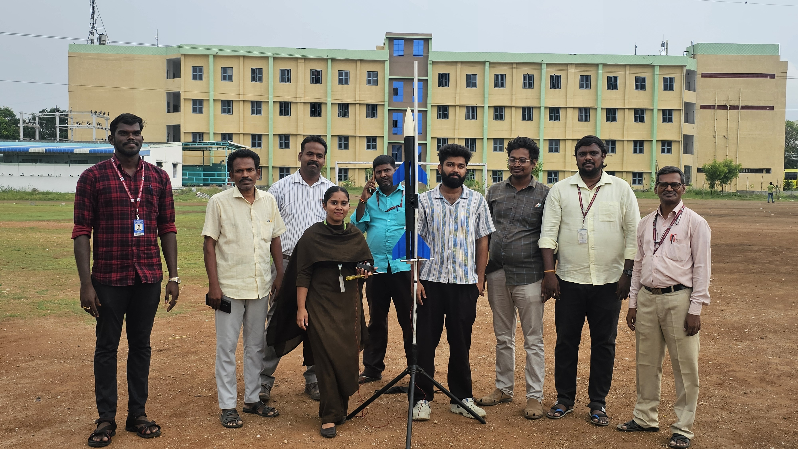
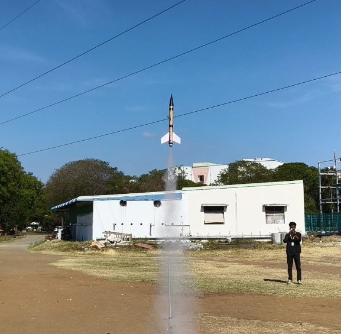

Rocket Flight Testing · Propulsion · Experimental Rocketry
Designed, fabricated, and tested a small-scale experimental rocket powered by KNSB solid propellant (Potassium Nitrate + Sorbitol). The project involved propulsion integration, structural assembly, ignition testing, launch preparation, and real flight experiments to evaluate thrust performance, stability, and flight behaviour.